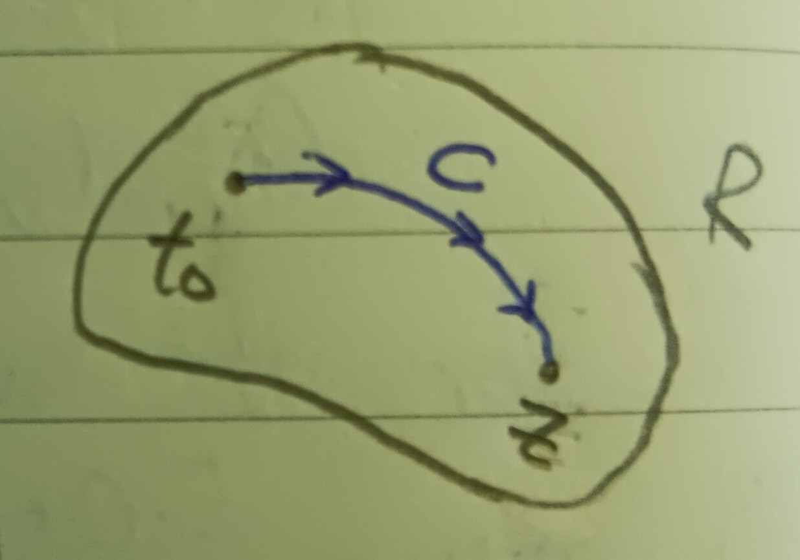
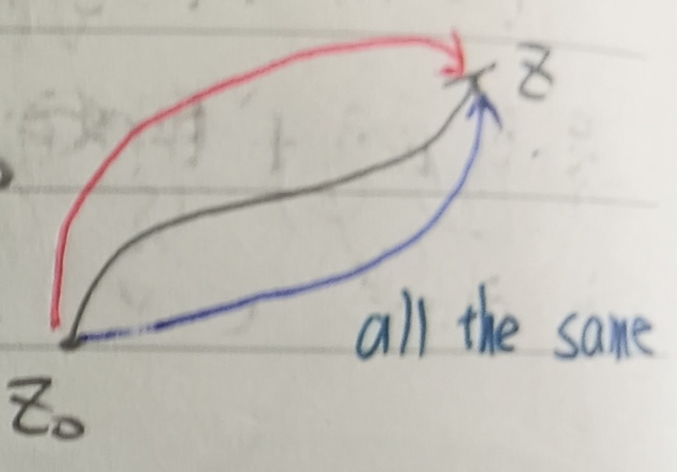
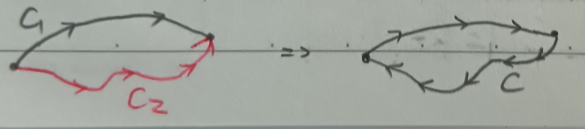
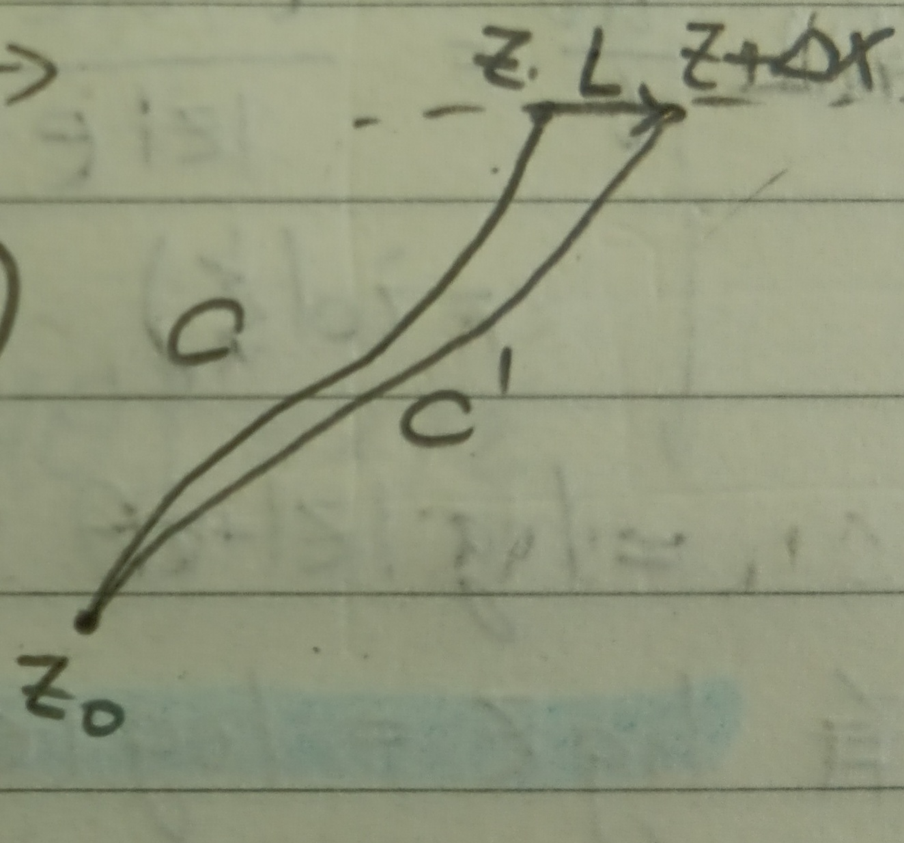
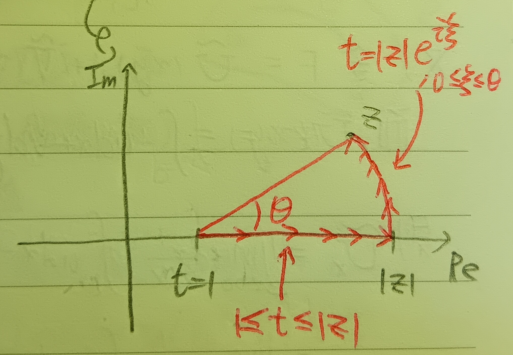
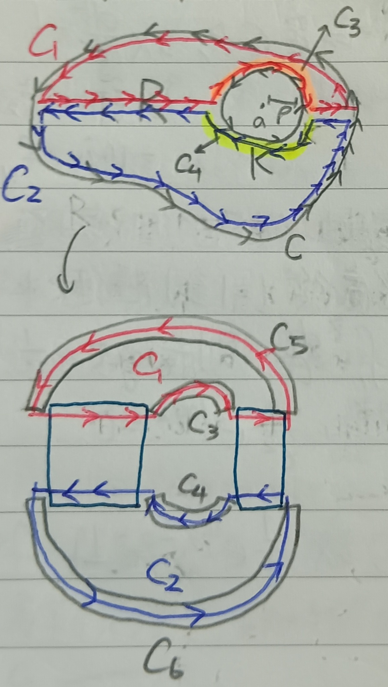
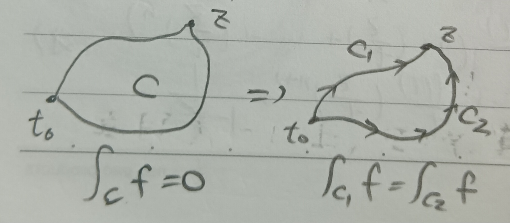
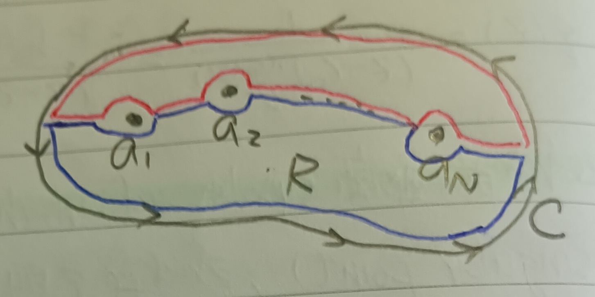
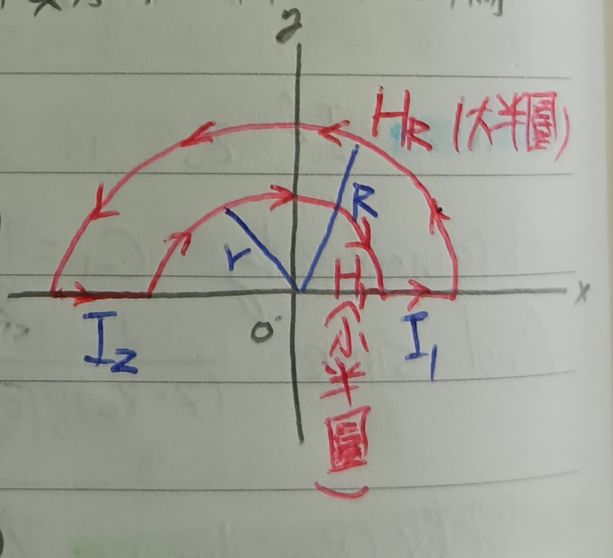
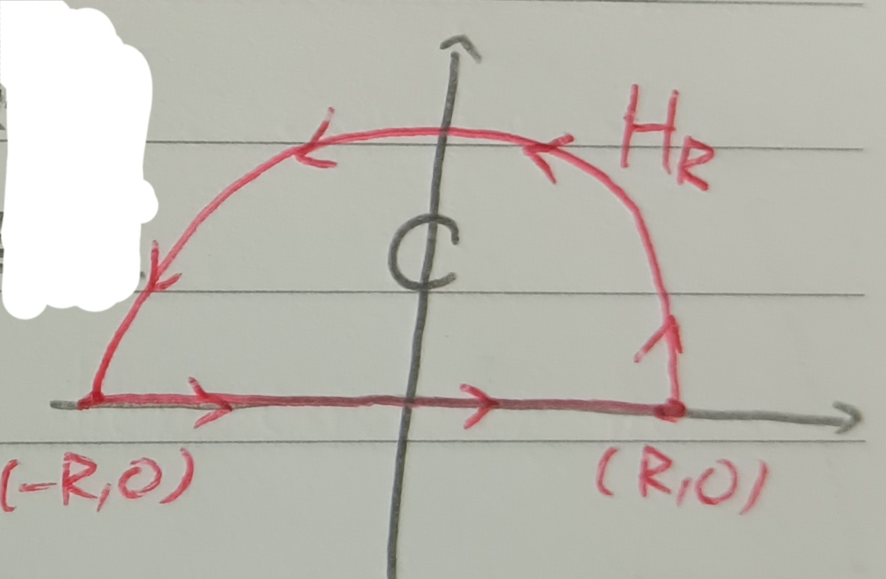

這份筆記是關於複變函數的積分定義與性質，以及在實變函數積分上的應用。
複變函數的積分
定義 1：複變函數的積分 (Integral of Complex Function)
令\(t=r+is\)，\(f\)在區域\(R\)上解析。令\(t=t_0\)和\(t=z\)為\(R\)中兩點，且兩點被定向曲線\(C\)連接(見下圖1)。
我們把\(C\)分成\(n\)個部分\(\{t_0,t_1,\cdots,t_n=z\}\)，並考慮黎曼和
\[
S_n=\sum_{k=1}^n f(t_k')(t_k-t_{k-1}),\mbox{ where
}t_k'\in[t_k,t_{k-1}]
\] 考慮\(\max\{|t_k-t_{k-1}|\}\to
0\)時\(S_n\)的極限，和實變數時一樣(見這裡的定理1-3)，可以知道\(\lim\limits_{n\to\infty}S_n\)存在。
具體來說，令 \[f(t)=u(r,s)+iv(r,s),
t_k=r_k+is_k, t_k'=r_k'+is_k', \Delta t_k=\Delta r_k+i\Delta
s_k
\] 則 \[
S_n=\sum_{k=1}^n[u(r_k',s_k')\Delta
r_k-v(r_k',s_k')\Delta s_k+i(v(r_k',s_k')\Delta
r_k+u(r_k',s_k')\Delta s_k)]
\] 於是，\(S_n\)收斂到\(\int_C udx-vdy+i\int_C
vdx+udy\)。我們稱這個值為\(f\)沿著曲線\(C\)的積分(the integral of \(f\) along the curve \(C\))，寫做 \[
\int_{t_0}^z f(t)dt\mbox{ or }\int_C f(t)ft
\]
註記 1-1
若存在\(M\)使得對於所有\(z\)都有\(|f(z)|\leq M<\infty\)，則 \[ \left|\int_C f(t)dt\right|\leq ML \] 其中\(L\)為\(C\)的弧長。
柯西定理
定理 2：柯西定理 (Cauchy's Theorem)
若\(f(z)\)在\(R\)上解析，則積分 \[ \int_{z_0}^z f(t)dt=\int_C f(t)ft \] 只和\(C\)的端點\(z, z_0\)有關，而與\(C\)的具體路徑無關(見下圖2)。
並且，若我們記\(F(z)=\int_{z_0}^z f(t)dt\)，則 \[ \frac{dF}{dz}=f(z) \]
證明：由假設\(f(x,y)=u(x,y)+iv(x,y)\)滿足柯西-黎曼方程(這裡的定理12)，故當\(C\)為封閉曲線時， \[ \int_C udx-vdy=\int_C vdx+udy=0 \] (這是高斯定理，見這裡的定理3)，故對於兩條起、終點相同的\(C_1,C_2\)，可以考慮如下圖3的一條封閉路徑\(C\)。
則 \[ \begin{aligned} &\int_c fdt=0=\int_{C_1}fdt-\int_{C_2}fdt\\ \Rightarrow&\int_{C_1}fdt=\int_{C_2}fdt \end{aligned} \] 又令\(F=\int_{z_0}^z f(t)dt=\tilde{U}(x,y)+i\tilde{V}(x,y)\)，其中由定義1中可以得知 \[ \tilde{U}(x,y)=\int_C udx-vdy \] 則由下圖4，有 \[ \begin{aligned} \tilde{U}_x&=\lim_{\Delta x\to 0}\frac{1}{\Delta x}\left(\int_C udx-vdy-\int_{C'}\right)\\ &=\lim_{\Delta x\to 0}\int_L udx-vdy \end{aligned} \] 其中 \[ L=\left\{ \begin{aligned} x&=x_0+t\\ y&=y_0 \end{aligned} \right. ,0\leq t\leq\Delta x \]
然而 \[ \int_L udx-vdy=\int_0^{\Delta x}\left(u\frac{dx}{dt}-v\frac{dy}{dt}\right)dt=\int_0^{\Delta x}udt=u\Delta x \] 故 \[ \tilde{U}_x=\lim_{\Delta x\to 0}\frac{1}{\Delta x}\times u\Delta x=u \] 同理\(\tilde{U}_y=-v\), \(\tilde{V}_x=v\), \(\tilde{V}_y=u\)。於是\(F\)滿足柯西-黎曼方程，故 \[ \frac{dF}{dz}=\tilde{U}_x+i\tilde{V}_x=u+iv=f \] QED
例 3：對數函數 (Logarithmic Function)
考慮\(f(t)=\frac{1}{t}\)，其中\(t\)的範圍\(R\)為負實軸以外的整個複平面。令 \[ t=|t|(\cos\theta+i\sin\theta), -\pi<\theta<\pi \] 考慮\(t\)從\(1\)到\(R\)中某一點\(z\)的積分\(\int_1^z\frac{dt}{t}\)，定義 \[ \log z=\int_1^z\frac{dt}{t} \] 則 \[ \frac{d}{dz}\log z=\frac{1}{z} \] 考慮函數\(e^{\log z}\)，由鏈鎖律有 \[ \frac{d}{dz}\left(\frac{1}{z}e^{\log z}\right)=\frac{-1}{z^2}e^{\log z}+\frac{1}{z^2}e^{\log z}=0 \] 意即\(\frac{1}{z}e^{\log z}\)是常數。又 \[ \log 1=\int_1^1\frac{dt}{t}=0 \] 故\(\frac{1}{1}e^{\log 1}=1\)，即 \[ \frac{1}{z}e^{\log z}=1, e^{\log z}=z \] 其中\(z\in R\)。也就是說，方程式\(e^w=z\)在\(z\in R\)時必至少有一解\(w=\log z\)。然而\(w\)應該不是唯一的，因為 \[ e^{w+2n\pi i}=e^w,\forall n\in\mathbb{Z} \] 接著，為了具體求出\(\log z\)的值，我們在\(\log z=\int_1^z\frac{dt}{t}\)中選取一個特殊的積分路徑。那就是先徑向，再旋轉(見下圖5)。
則在上圖中的圓弧上 \[ \frac{dt}{t}=\frac{i|z|e^{i\xi}}{|z|e^{i\xi}}d\xi=id\xi \] 故 \[ \begin{aligned} \log z&=\int_1^{|z|}\frac{dt}{t}+\int_0^\theta id\xi\\ &=\log |z|+i\theta \end{aligned} \] 於是，我們便有 \[ \log z=\log |z|+i\theta+2n\pi i \] 這個步驟其實對於落在負實軸上的\(z\)也沒有問題，故我們可以定義：
定義 3-1：對數的主值 (Principle Value of Logarithm)
對於\(z\neq 0\)，我們稱\(\log z\)的主值為 \[ \log z=\log |z|+i\theta \] 其中\(-\pi<\theta\leq \pi\)。
柯西積分公式
定理 4：柯西積分公式 (Cauchy's Integral Formula)
若\(f\)在區域\(R\)上解析，且\(R\)的邊界為\(C\)，則 \[ \frac{1}{2\pi i}\int_C\frac{f(z)}{w-z}dw=f(z) \]
證明：考慮\(g(z)=\frac{f(z)}{z-a}\)，則\(g(z)\)在\(R\)中除了\(z=a\)之外的地方都解析。令\(K\)為以\(a\)為圓心、以\(\rho\)為半徑的圓(見下圖6)，並令\(C_1\)和\(C_2\)兩路徑如下圖所示，則由柯西定理(定理2)有 \[ \int_{\textcolor{red}{C_1}}g=\int_{\textcolor{blue}{C_2}}g=0 \]
令\(C_3\)和\(C_4\)為\(C_1\)和\(C_2\)繞行\(K\)的部分，\(C_5\)和\(C_6\)為\(C_1\)和\(C_2\)繞行\(C\)的部分。又，兩段連接\(C\)和\(K\)的部分會分別抵銷，故 \[
\begin{aligned}
&\int_{\textcolor{red}{C_1}}g+\int_{\textcolor{blue}{C_2}}g=0\\
\Rightarrow&\int_{C_5}g+\int_{C_3}g+\int_{C_6}g+\int_{C_4}g=0\\
\Rightarrow&\int_{C_5}g+\int_{C_6}g=-\left(\int_{C_3}g+\int_{C_4}g\right)\\
\Rightarrow&\int_C g=\int_K g
\end{aligned}
\] 最後一步要注意\(C_3,C_4\)與\(K\)反方向。
又，\(K\)可表為\(z=a+\rho e^{i\theta}\)，故\(dz=\rho ie^{i\theta}d\theta\)。於是 \[
\begin{aligned}
\int_K g(z)dz&=\int_0^{2\pi}g(z)\rho ie^{i\theta}d\theta\\
&=\int_0^{2\pi}\frac{f(z)}{z-a}\rho e^{i\theta}d\theta\\
&=i\int_0^{2\pi}f(a+\rho e^{i\theta})d\theta\mbox{ (☆)}\\
&(z-a=\rho e^{i\theta})
\end{aligned}
\] 由於\(f\)連續，故當\(\rho\)夠小時，我們有 \[
f(a+\rho e^{i\theta})=f(a)+\eta
\] 其中\(|\eta|<\epsilon\)。故由註記1-1知 \[
\left|\int_0^{2\pi}f(a+\rho
e^{i\theta})d\theta-\int_0^{2\pi}f(a)d\theta\right|\leq 2\pi\epsilon
\] 意即 \[
\int_0^{2\pi}f(a+\rho e^{i\theta})d\theta=2\pi f(a)+\epsilon'
\] 則由上(☆)式，有 \[
\int_C g(z)dz=\int_K g(z)dz=2\pi if(a)+\epsilon'i
\] 令\(\epsilon'\to
0\)，即有 \[
\frac{1}{2\pi i}\int_C\frac{f(z)}{w-z}dw=f(z)
\] QED
定理 5
若\(f(z)\)在\(|z-z_0|\leq R\)上解析，則我們可以把\(f\)寫成\((z-z_0)\)的冪級數，且這個冪級數至少在\(|z-z_0|<R\)處收斂。
證明：WLOG，令\(z_0=0\)。令\(|z|<R\), \(|t|=R\)，我們有 \[
\begin{aligned}
\frac{f(t)}{t-z}&=\frac{f(t)}{t}\times\frac{1}{1-z/t}\\
&=\frac{f(t)}{t}\left(1+\left(\frac{z}{t}\right)+\left(\frac{z}{t}\right)^2+\cdots+\left(\frac{z}{t}\right)^n\right)+\frac{f(t)}{t}\left(\frac{z}{t}\right)^{n+1}\times\frac{1}{1-z/t}\mbox{
(★)}
\end{aligned}
\] 而在這裡由於\(|z/t|<1\)，故令\(|z/t|\leq q<1\)。接著，我們令 \[
r_n=\frac{1}{t}\times\frac{z^{n+1}}{t^{n+1}}\times\frac{1}{1-z/t}
\] 則 \[
|r_n|\leq\frac{1}{R}q^{n+1}\times{1}{1-q}
\] 把(★)式兩邊塞進柯西積分公式對\(t\)積分再除以\(2\pi i\)，得 \[
f(z)=c_0+c_1z+\cdots+c_nz^n+R_n
\] 其中 \[
\begin{aligned}
c_k&=\frac{1}{2\pi i}\int_C\frac{f(t)}{t^{n+1}}dt\\
R_n&=\frac{1}{2\pi i}\int_C f(t)r_ndt
\end{aligned}
\] 其中\(C\)是圓\(|t|=R\)。
令\(M\)為\(|f(t)|\)在\(|t|=R\)上的上界，則當\(n\to\infty\)時 \[
|R_n|\leq\frac{1}{2\pi R}\times\frac{q^{n+1}}{1-q}\cdot 2\pi\cdot R\cdot
M\to 0
\] 故 \[
f(z)=\sum_{n=0}^\infty c_nz^n, c_n=\frac{1}{2\pi
i}\int_C\frac{f(z)}{z^{n+1}}dz
\] QED
註記 5-1
若\(f=u+iv\)解析，則\(f'\)也解析(可以從\(f\)的冪級數去看，見這裡的註記9)。且因為\(f'\)也解析，故其仍滿足柯西-黎曼方程，即 \[ \left\{ \begin{aligned} u_{xx}+u_{yy}&=\Delta u=0\\ v_{xx}+v_{yy}&=\Delta v=0 \end{aligned} \right. \] 其中\(\Delta\)是拉普拉斯算符(見這裡的定義7)。
定義 5-1-1：調和函數 (Harmonic Function)
即滿足\(\Delta u=\Delta
v=0\)的函數\(f=u+iv\)。
除此之外，我們還有柯西定理的逆定理。
定理 6：莫雷拉定理 (Morera's Theorem)
若連續函數\(f(z)=\xi=u+iv\)沿著任何在\(R\)中的封閉曲線\(C\)的積分都是零，則\(f\)在\(R\)中解析。
證明：考慮積分\(F(z)=\int_{t_0}^z f(t)dt\)，其中積分路徑是從\(t_0\)到\(z\)的隨便一條路徑(積分和路徑無關，見下圖7)。
則當\(h\to 0\)時，因為\(f\)是連續的，故 \[ \begin{aligned} \frac{F(z+h)-F(z)}{h}-f(z)&=\frac{1}{h}\int_z^{z+h}[f(t)-f(z)]dt\\ &=\frac{h}{h}\times\epsilon\to 0 \end{aligned} \] 故\(F\)可微 i.e. \(F\)解析。由上註記5-1知\(F'=f\)也解析。QED
留數定理
定義 7：n階零點 (Zero of n-th Order)
若\(f\)在\(z=z_0\)處為零，則其以\((z-z_0)\)為項的泰勒級數的常數項為零，意即 \[ f(z)=(z-z_0)f'(z_0)+(z-z_0)^2\frac{f''(z_0)}{2!}+\cdots \] 於是可以提出公因式\((z-z_0)^n\)，使得 \[ f(z)=(z-z_0)^n g(z) \] 其中當\(g(z_0)\neq 0\)時，則我們稱\(z=z_0\)為\(n\)階零點。
定義 8：n階極點 (Pole of n-th Order)
考慮函數\(\frac{1}{f(z)}=q(z)\)，這個函數在\(f\)為零的點以外都解析。若\(z_0\)是\(f\)的\(n\)階零點，則 \[ q(z)=\frac{1}{(z-z_0)^ng(z)}=\frac{h(z)}{(z-z_0)^n} \] 這裡\(h(z)=\frac{1}{g(z)}\)，且\(h\)在\(z=z_0\)是解析的。我們稱\(z=z_0\)為\(q\)的\(n\)階極點(或稱\(n\)階奇點(Singularity))。
註記 8-1
在定義8中對\(h\)做冪級數展開，則 \[ q(z)=\frac{c_{-n}}{(z-z_0)^n}+\frac{c_{-n+1}}{(z-z_0)^{n-1}}+\cdots+\frac{c_{-1}}{z-z_0}+c_0+c_1(z-z_0)+\cdots \] 若\(z_0\)是一階極點，則\(c_{-1}\)可以由以下公式得出： \[ c_{-1}=\lim_{z\to z_0}(z-z_0)q(z) \] 並且由於 \[ \frac{1}{(z-z_0)q(z)}=\frac{f(z)}{z-z_0}=\frac{f(z)-f(z_0)}{z-z_0} \] 故\(c_{-1}=\frac{1}{f'(z_0)}\)。
定義 9：留數 (Residue)
若\(f\)在\(z_0\)的鄰域處處解析但在\(z_0\)不解析，則由柯西積分定理知\(f\)沿著任何包含\(z_0\)的圓積分都會積出一樣的值。將該積分值稱為\(f\)在\(z_0\)的留數。
註記 9-1
沿用註記8-1中的符號，則\(f\)在\(z_0\)的留數是\(2\pi ic_{-1}\)。
證明：若\(z_0\)是\(f\)的\(n\)階極點，則由註記8-1知\(f\)可表為 \[ f(z)=\frac{c_{-n}}{(z-z_0)^n}+\frac{c_{-n+1}}{(z-z_0)^{n-1}}+\cdots+\frac{c_{-1}}{z-z_0}+c_0+c_1(z-z_0)+\cdots \] 兩邊沿以\(z_0\)為圓心的圓\(K\)積分，易知對於\(m\geq 0\)有 \[ \int_K c_m(z-z_0)^mdz=0 \] 而由柯西積分公式， \[ \int_K\frac{c_{-1}}{z-z_0}dz=2\pi ic_{-1} \] 而當\(m\geq 2\)時， \[ \int\frac{dz}{(z-z_0)^m}=\frac{(z-z_0)^{-m+1}}{1-m} \] (這就是普通的反導函數)，故 \[ \int_K\frac{c_{-m}}{(z-z_0)^m}dz=0 \] 於是，我們知道\(f\)在\(z_0\)的留數是\(2\pi ic_{-1}\)。QED
定理 10：留數定理 (Theorem of Residues)
若\(f\)在\(R\)中除了有限多個極點以外的地方都解析，則\(f\)沿\(C\)(即\(R\)的邊界)的積分是\(f\)在那些極點的留數和。
證明：這和上述一個極點的情形類似，使用下圖9的路徑就好。QED
圍道積分
例 11：狄利克雷積分 (Dirichlet Integral)
\[ \int_0^\infty\frac{\sin x}{x}dx=\frac{\pi}{2} \]
證明：考慮函數\(f(z)=\frac{e^{iz}}{z}\)，我們沿著以下路徑積分\(f\)：半徑分別為\(r\)和\(R\)的半圓，以及線段\(I_1,I_2\)(見下圖10)。
易知\(\frac{e^{iz}}{z}\)在此區域內解析，故積分值應為\(0\)。即 \[ \int_{H_R}\frac{e^{iz}}{z}dz+\int_{H_r}\frac{e^{iz}}{z}dz+\int_{I_1}\frac{e^{iz}}{z}dz+\int_{I_2}\frac{e^{iz}}{z}dz=0 \] 在線段\(I_1\)和\(I_2\)上，\(z=x\)且\(e^{ix}=\cos x+i\sin x\)。又 \[ \begin{aligned} \int_{I_1}\frac{\cos x}{x}dx&=-\int_{I_2}\frac{\cos x}{x}dx\\ \int_{I_1}\frac{\sin x}{x}dx&=\int_{I_2}\frac{\sin x}{x}dx \end{aligned} \] 故 \[ \int_{H_R}\frac{e^{iz}}{z}dz+\int_{H_r}\frac{e^{iz}}{z}dz+2i\int_r^R\frac{\sin x}{x}dx=0 \] 令\(R\to\infty\)，將\(H_R\)上的點表為\(z=R(\cos\theta+i\sin\theta)\)，則 \[ e^{iz}=e^{iR\cos\theta}\cdot e^{-R\sin\theta}, dz=iRe^{i\theta}d\theta \] 故 \[ \int_{H_R}\frac{e^{iz}}{z}dz=i\int_0^\pi e^{iR\cos\theta}\cdot e^{-R\sin\theta}d\theta \] 然而\(|e^{iR\cos\theta}|=1\)，且只要\(R\)夠大，\(\forall\delta>0\)，\(e^{-R\sin\theta}\)可以在區間\(\delta\leq\theta\leq\pi-\delta\)中任意小。故 \[ \left|\int_{H_R}\frac{e^{iz}}{z}dz\right|<\epsilon\Rightarrow\int_{H_R}\frac{e^{iz}}{z}dz=0 \] 類似的，當\(r\to 0\)時， \[ \int_{H_r}\frac{e^{iz}}{z}dz=-\pi i \] (細節略)，故有 \[ -\pi i+2i\int_0^\infty\frac{\sin x}{x}dx=0\Rightarrow\int_0^\infty\frac{\sin x}{x}dx=\frac{\pi}{2} \] QED
例 12
考慮 \[ Q(z)=\frac{a_0+a_1z+\cdots+a_mz^m}{b_0+b_1z+\cdots+b_nz^n} \] 其中\(b_0+b_1z+\cdots+b_nz^n\)無實根且\(n\geq m+2\)，且\(a_0,\cdots,a_m,b_0,\cdots,b_n\in\mathbb{R}\)。令 \[ I=\int_{-\infty}^\infty Q(x)dx \] 考慮環路\(C\)為一半徑為\(R\)的半圓及其直徑(見下圖11)。
令\(R\)大到以原點為圓心、以\(R\)為半徑的圓能包住\(b_0+b_1z+\cdots+b_nz^n\)的所有根 i.e. \(Q\)所有的極點都落在以原點為圓心、以\(R\)為半徑的圓內。則由留數定理， \[ \int_{H_R}Q(z)dz+\int_{-R}^R Q(x)dx=\mbox{上半部留數和} \] 由於\(n\geq m+2\)，故存在\(M\)使得 \[ |Q(z)|\leq\frac{M}{R^2} \] 則當\(R\to\infty\)時 \[ \left|\int_{H_R}Q(z)dz\right|\leq\pi R\cdot\frac{M}{R^2}=\frac{\pi M}{R}\to 0 \] 故 \[ \int_{-\infty}^\infty Q(x)dx=\mbox{上半部留數和} \]
例 12-1
考慮 \[ Q(z)=\frac{1}{az^2+bz+c} \] 其中\(b^2-4ac<0\), \(a,b,c\in\mathbb{R}\)。則\(Q\)在上半平面只有唯一一個極點，其為 \[ z=\frac{1}{2a}(-b+i\sqrt{4ac-b^2}) \] 令\(f(z)=az^2+bz+c\)，可以發現\(Q\)的極點是一階極點，故由註記8-1與註記9-1， \[ \mbox{留數}=\frac{2\pi i}{f'(z)}=\frac{2\pi i}{i\sqrt{4ac-b^2}} \] 於是 \[ \int_{-\infty}^\infty Q(x)dx=\frac{2\pi}{\sqrt{4ac-b^2}} \]
例 12-2
考慮 \[ Q(z)=\frac{1}{1+z^4}, f(z)=1+z^4 \] 則\(Q\)在上半平面有兩極點\(z_1=e^{i\pi/4}\)和\(z_2=e^{3i\pi/4}\)，都是一階極點，故 \[ \mbox{留數和}=2\pi i\left[\frac{1}{f'(z_1)}+\frac{1}{f'(z_2)}\right]=\frac{\sqrt{2}}{2}\pi \] 即 \[ \int_{-\infty}^\infty \frac{1}{1+x^4}dx=\frac{\sqrt{2}}{2}\pi \]